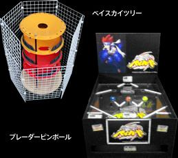

Bey Sky Tree
From Beywiki, the Beyblade Encyclopedia - Presented by the World Beyblade Organization

Bey Sky Tree shown to the left of the Blader Pin Ball
This attraction was first displayed in special events by TAKARA-TOMY in Japan in April 2011. These events were called "Beyblade Battle Training Gym" and other attractions used alongside the Bey Sky Tree included the Blader Pin Ball, the Blader Billard, and the Bey Ta 2 Go machine.
The Bey Sky Tree consists of four to five stadiums stacked one on top of the other. Each of those stadiums (floors from the BeyStadium Standard Type) has a hole cut into it, and the goal of the activity is therefore to remain the highest without being knocked out.